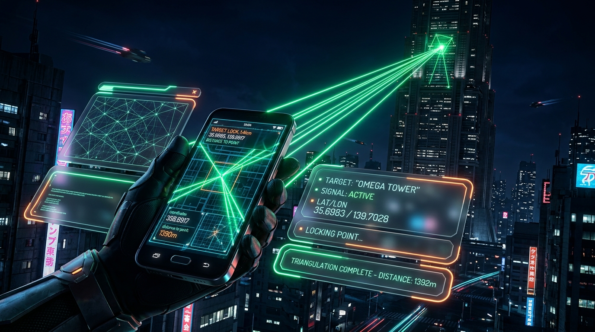

Software Lab - Final Presentation
Existing reference points require physically walking the phone to the landmark. We needed a way to mark points in 3D space that cannot be physically touched (e.g., across the street).

(Depth-Dominated)
(Parallax-Dominated)
Closest Point of Approach solver with RANSAC robust outlier rejection. Treats depth as a soft, distance-weighted prior that triangulation out-votes over distance.
Measurement Point entity persists via the library store. Ensures the marking flow replays deterministically without needing custom stores.
Crosshair uses device-forward axis; tap-to-aim unprojects the pixel via camera intrinsics. Ray capture happens seamlessly in AR.
Solved in AR-local frame, stored in both AR and GPS coordinates. Rendered as two connected dots serving as a live alignment-error probe.
Align crosshair or tap target to capture the first observation ray.
Follow coaching prompts to "move sideways". Shoot additional rays to widen the baseline.
Watch the provisional yellow sphere solidify as uncertainty shrinks with more rays.
Tap confirm. Point is saved as persistent Green (AR) and Orange (GPS) dots.
Claude 4.6 Sonnet - 1 simple prompt wiped all tokens (free tier).
Integration debug takes a long time, new problem old problem solved (whack-a-mole).